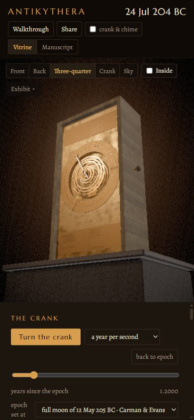
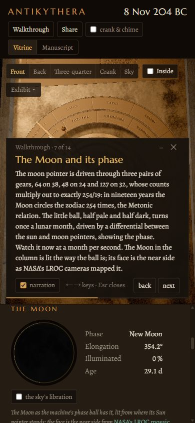
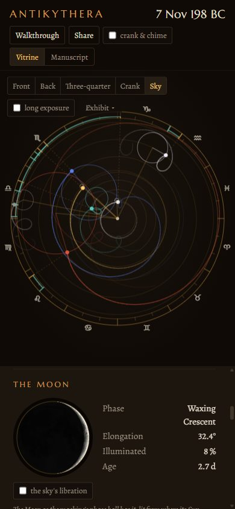

A reconstruction that works
Sponge divers brought the Antikythera mechanism up from a Roman-era wreck in 1901. It is a hand-cranked bronze calculator, made in the second or early first century BC, that predicted the positions of the Sun, the Moon and the planets, the Moon's phase, the calendar and the eclipses. Eighty-two corroded fragments survive, about a third of it.
This is a working model of it, after the 2021 reconstruction by Tony Freeth's team at UCL. Thirty of its sixty-nine gears are the ones found in the fragments; the other thirty-nine follow that model. Turn the crank and every wheel turns at the exact ratio its teeth give. Beside the machine, a column holds what it predicts against what really happened: NASA's eclipse canon for the eclipses, a modern ephemeris for the positions. When the machine is wrong, the column says so.
The walkthrough, leaf by leaf
The exhibit opens with fourteen narrated leaves, each setting the machine to show one idea. Each one below is the exhibit as it stands at that leaf. The address above it opens the exhibit in the same state, and Arthur reads the leaf aloud if you ask him.
Seven ways to look at it
Every view is a switch in the exhibit, and every one can be sent as a link. These are filmed from the running page.
Or turn it here
The exhibit itself, loaded into this page. Drag to orbit, scroll to zoom, and press the space bar to turn the crank. It needs a browser with WebGL.
About 15 MB, most of it the machine. Or open it in its own tab.
On a phone
The same exhibit, fitted to a hand: the stage above, the catalogue below, the walkthrough as a card you can fold away.



How it is checked
Nothing on screen is taken on trust. The arithmetic is tested, the build checks itself, and the predictions are held against the real sky.
Every rate as a fraction
The tests derive each pointer's rate from the tooth counts alone and assert it exactly: 254/19 for the Moon, 940/4237 for the Saros, −5/93 for the regressing lunar nodes, 1513/480 for Mercury. No decimals, no tolerances.
The rig against the solver
The Blender build drives the finished rig through a year, reads every gear back, and checks each pin-and-slot swing against asin(d/r). A wheel that does not turn at the rate the table gives fails the build.
The glyphs against the bronze
The eclipse-year model reproduces the glyph counts of Freeth 2014, and every glyph read on the surviving cells of the Saros dial.
The predictions against NASA
Every month the machine predicts is held against the Five Millennium Canon of Solar and Lunar Eclipses, and the exhibit says hit, miss or false alarm in plain words.
How it is built
One file is the source of truth. data/gears.json holds every wheel: its teeth, its module, the arbor it rides and what it meshes with. Nothing downstream invents a number, and no third-party geometry is imported.
- The tableSixty-nine gears with their teeth, arbors and couplings.
data/gears.json - The solverEvery rate as an exact fraction, and the arbor layout.
python/mech/ - The machineWheels, plates, dials and pointers cut and driven in Blender.
blender/ - The exportOne glTF carrying each driver rule on its nodes.
export_glb.py - The exhibitthree.js turning it from the same arithmetic.
web/
Time is Julian Day throughout, on the proleptic Julian calendar for dates BC, with
astronomical years: nothing in the exhibit trusts a JavaScript Date before
1582. Rates are turns per year of the main wheel, and the same rule is written three
times, in Python, in the Blender drivers and in the web, with tests holding the three
together. The decisions, and the reasons for them, are kept in
NOTES.md.
Sources
- Freeth, Higgon, Dacanalis, MacDonald, Georgakopoulou and Wojcik, A Model of the Cosmos in the ancient Greek Antikythera Mechanism, Scientific Reports 11:5821 (2021), CC BY 4.0, and the earlier Antikythera Mechanism Research Project papers of 2006, 2008, 2012 and 2014.
- Eclipses: Fred Espenak and Jean Meeus, NASA Goddard, Five Millennium Canon of Solar and Lunar Eclipses. Positions: astronomy-engine (Don Cross).
- Parapegma and front dial inscriptions: Bitsakis and Jones, The Front Dial and Parapegma Inscriptions, Almagest 7.1 (2016).
- Epochs: Carman and Evans 2014 (the full moon of 12 May 205 BC); Voulgaris, Mouratidis and Vossinakis 2023 (22 December 178 BC).
- The games and the calendar: Iversen 2017, Hesperia 86. The calendar ring's holes: Woan and Bayley 2024. The teeth: Szigety and Arenas 2025 (a preprint).
- Fragment A's CT scan: Ashkan Pakzad, CC BY 4.0. The Moon's face: NASA's CGI Moon Kit (LROC), public domain. Rooms: Poly Haven HDRIs, CC0. Narration: ElevenLabs, the voice "Arthur".